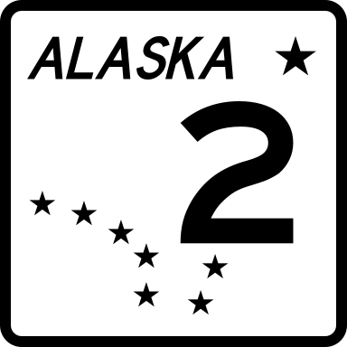

Problem B: Alaska
The Alaska Highway runs 1422 miles from Dawson Creek, British Columbia
to Delta Junction, Alaska. Brenda would like to be the first person
to drive her new electric car the length of the highway. Her car
can travel up to 200 miles once charged at a special charging station.
There is a charging station in Dawson Creek, where she begins her
journey, and also several charging stations along the way. Can
Brenda drive her car from Dawson City to Delta Juntion and back?
Input Specification
The input contains several scenario. Each scenario begins with
a line containing n, a positive number indicating the
number of charging stations. n lines follow, each giving
the location of a filling station on the highway, including
the one in Dawson City. The location
is an integer between 0 and 1422, inclusive, indicating the distance
in miles from Dawson Creek. No two filling stations are at
the same location. A line containing 0 follows the last scenario.
Sample Input
2
0
900
8
1400
1200
1000
800
600
400
200
0
0
Output Specification
For each scenario, output a line containing POSSIBLE if
Brenda can make the trip.
Otherwise, output a line containing the word IMPOSSIBLE.
Output for Sample Input
IMPOSSIBLE
POSSIBLE
Ondřej Lhoták